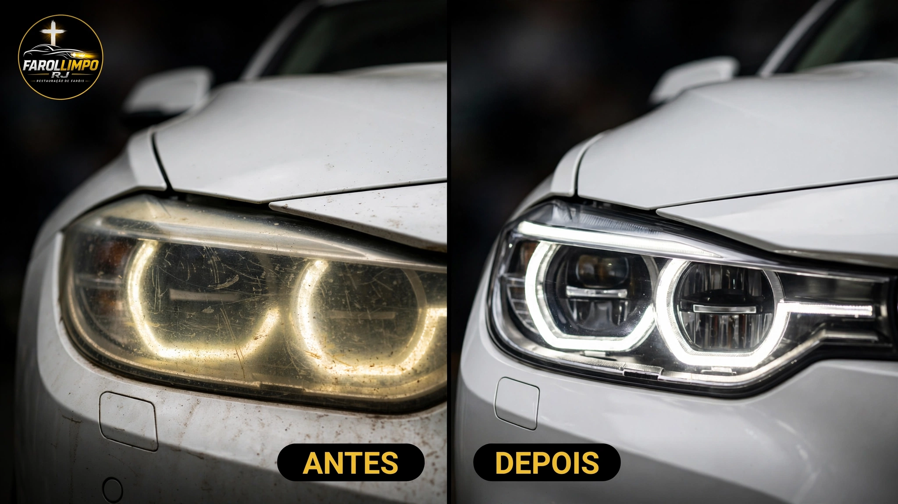
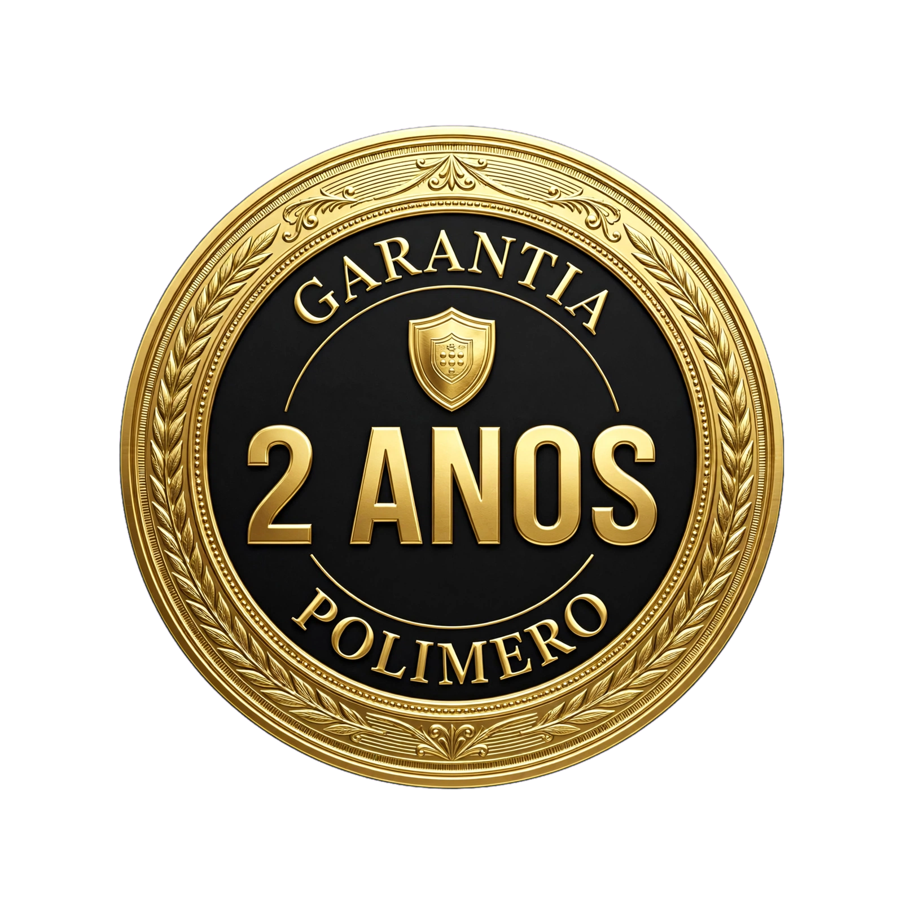
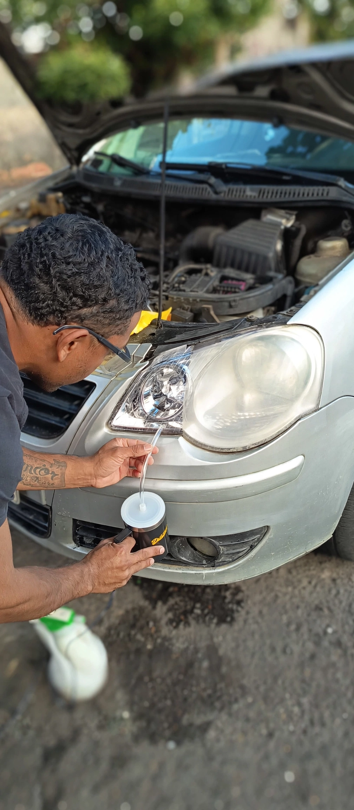
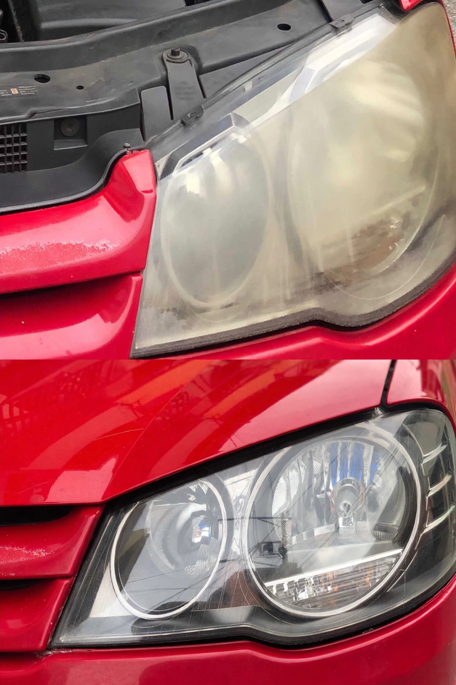
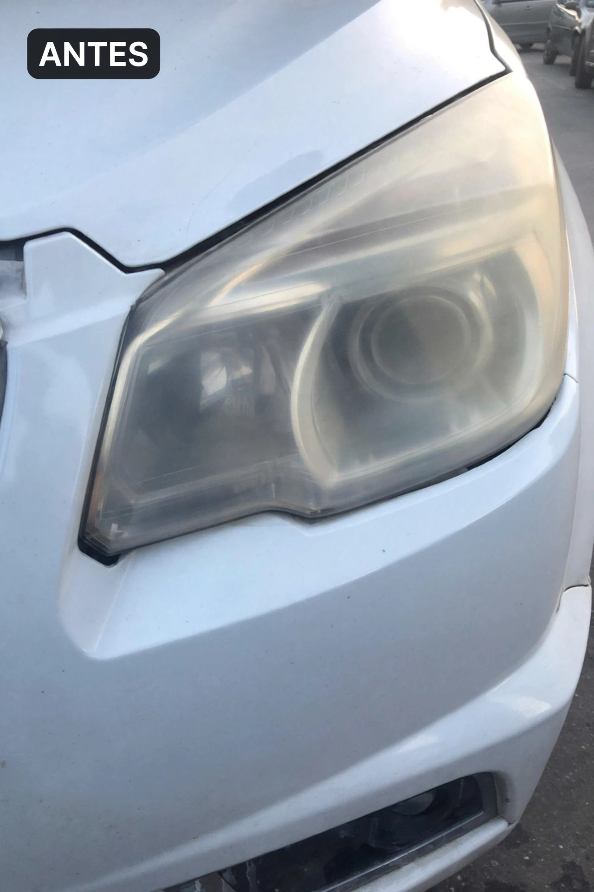
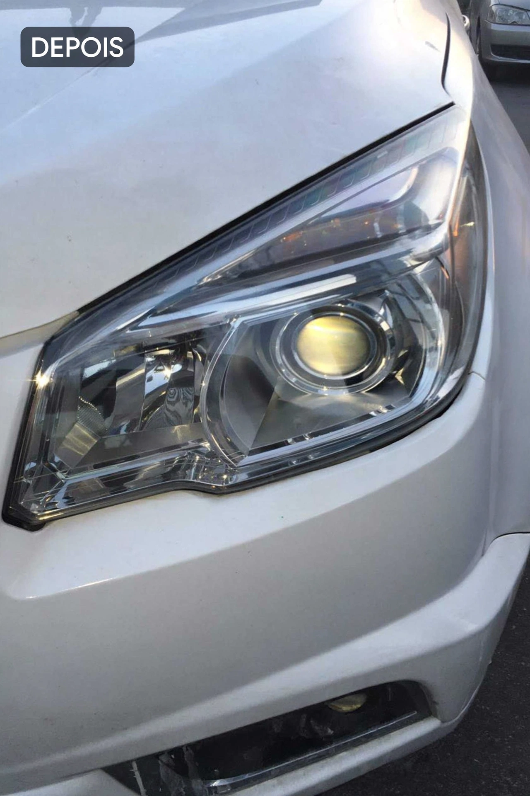

Recuperamos 100% da transparência sem trocar o farol. Processo em 40 minutos, proteção UV real e garantia de 2 anos escrita.
Quero Orçamento no WhatsApp
Se amarelar, refazemos grátis. Polímero, não é polimento que dura 2 meses.
Lixamento técnico + vaporização do polímero que reconstrói a lente.




Se amarelar ou ficar opaco em até 2 anos, refazemos gratuitamente.